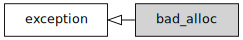

std::bad_alloc
From cppreference.com
| Defined in header
<new>
|
||
| class bad_alloc : public std::exception;
|
||
std::bad_alloc is the type of the object thrown as exceptions by the allocation functions to report failure to allocate storage.


Inheritance diagram
Contents |
[edit] Member functions
| constructs the bad_alloc object (public member function) |
|
| replaces a bad_alloc object (public member function) |
|
| returns explanatory string (public member function) |
|
Inherited from std::exception
Member functions
| [virtual]
|
destructs the exception object (virtual public member function of std::exception)
|
| [virtual]
|
returns an explanatory string (virtual public member function of std::exception)
|
[edit] Example
#include <iostream> #include <new> int main() { try { while (true) { new int[100000000ul]; } } catch (const std::bad_alloc& e) { std::cout << "Allocation failed: " << e.what() << '\n'; } }
Output:
Allocation failed: std::bad_alloc
[edit] See also
| allocation functions (function) |
|